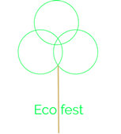

Eco fest |
|
Home pageEco fest is going to be the best festival of the year better then leeds fest because they care a lot about the enviroment and how to protect it with the best bands from around the area with the added benfit of being eco frendly. Eco fest is a festival that's all about recycling and is trying to get the peopel who come to try there best to recycle more and all the acts that perform at the festival care about the enviroment. Eco fest has four acts Green gizmo,Solar drum,Everyones enviroment and DJ John Alfre.The festival will take place on the third saturday of july and will be from 9:00am to 12:00pm. |
|
| All pages are created by Ash Dormor | |